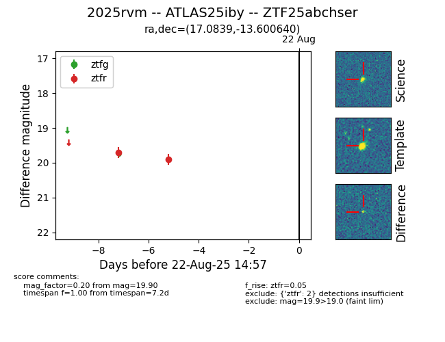

Target 2025rvm at 2025-08-21 11:20, see:
FINK: fink-portal.org/ZTF25abchser
Lasair: lasair-ztf.lsst.ac.uk/objects/ZTF25abchser
ALeRCE: alerce.online/object/ZTF25abchser
TNS: wis-tns.org/object/2025rvm
YSE: ziggy.ucolick.org/yse/transient_detail/2025rvm
alt names
ZTF25abchser (ztf,alerce)
2025rvm (tns,yse)
ATLAS25iby (atlas)
coordinates:
equatorial (ra, dec) = (17.0839,-13.60064)
galactic (l, b) = (140.0336,-75.90826)
photometry
last ztfr=19.90
2 ztfr detections
